Requirements
An Amazon AWS account.
Paired-end short read data in FASTQ format.
Some time and patience. High quality data can take time.
That's it! You'll also need a way to securely upload the reads and other files.
We recommend Cyberduck for Mac OS X and Windows.
Linux users will probably already know how to SFTP.
How to use STORMSeq
0. Set up an Amazon AWS account and enable EC2 and S3.
Your telephone number and billing information will be verified with Amazon, which may take some time (typically a few minutes, but could take longer).
1. Go to the EC2 Management Console.
You can do this by going to AWS page and finding the AWS Management Console in the top right.
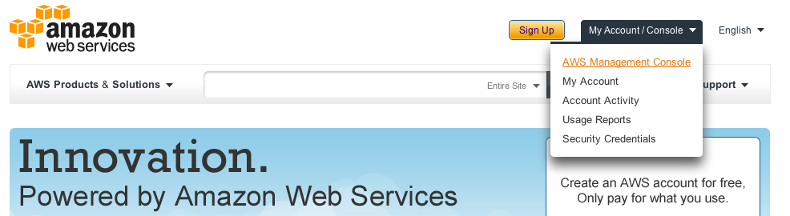
In the AWS console, click on the EC2 link.
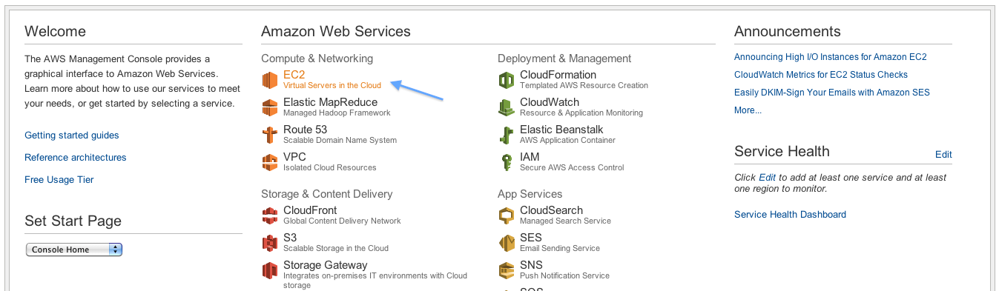
2. Start a new EC2 instance to start the webserver.
You are now on the EC2 console, where you can see all your running resources in the right panel.
IMPORTANT: Note your region in the top left. Please choose US East (Virginia) for now.
Click instances in the left panel
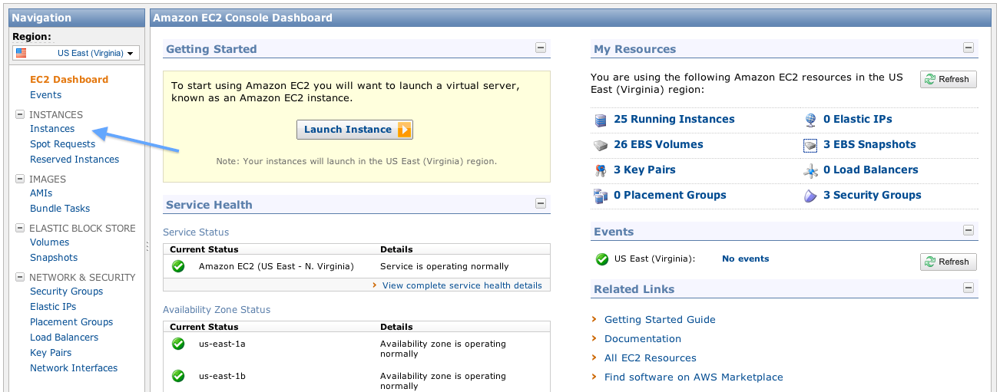
Click "Launch Instance" and click Continue through the Classic Wizard
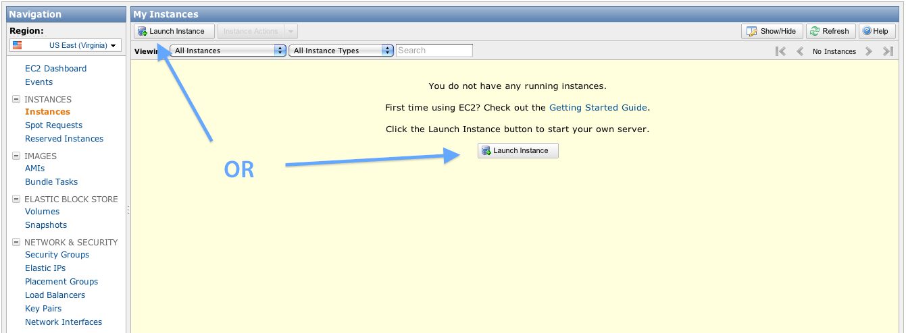
Click "Community AMIs"
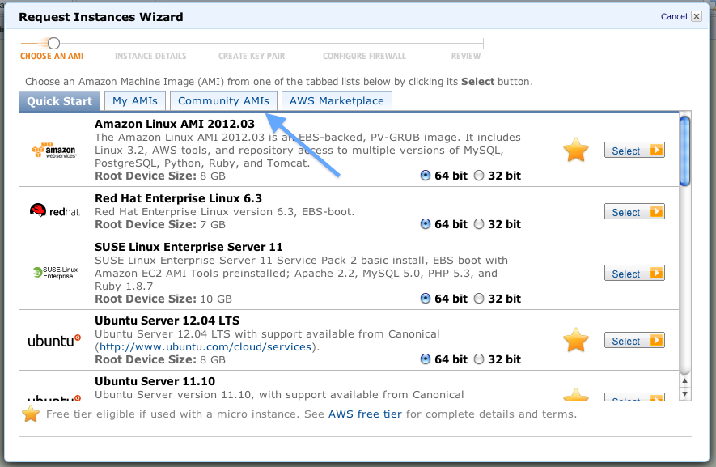
Search for the STORMSeq AMI (ami-XXXXXXX) and select it
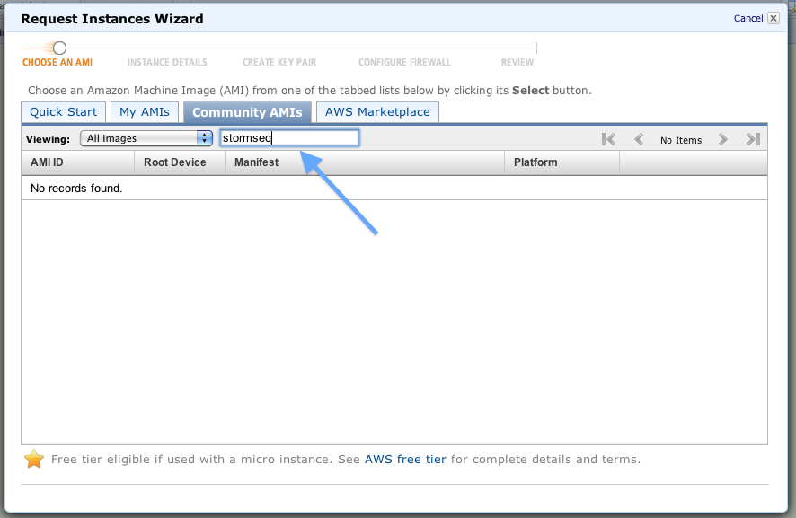
Select your instance type and availability zone
Since this is just the webserver, the instance can be of any type, including Micro.
Please select us-east-1b for the availability zone.
Click continue
Advanced: You may request a spot instance at this stage, but note that when setting the "stormseq" tag later,
Amazon AWS currently has a bug where it will forget the tag and you must go back and add it later.
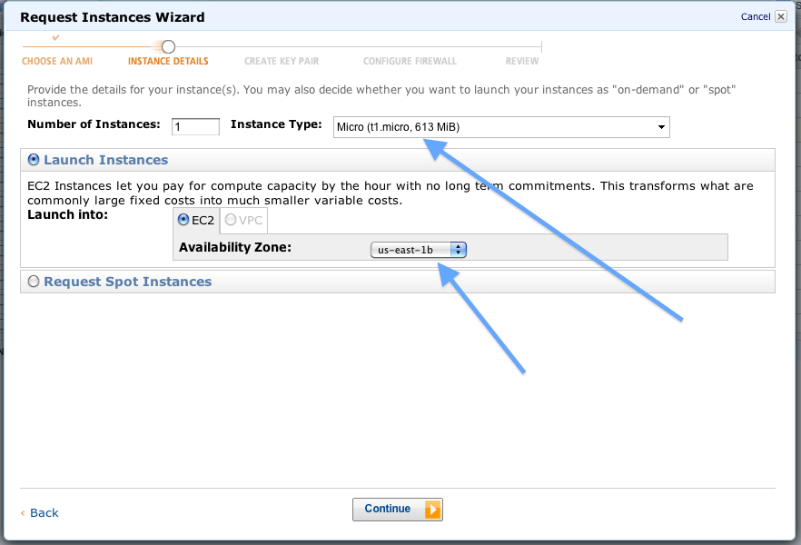
Click continue through "Advanced Instance Options" and "Storage Device Configuration" leaving the default options.
Important!: In the tags interface, name the instance "stormseq" for the software to identify the server.
Click continue.
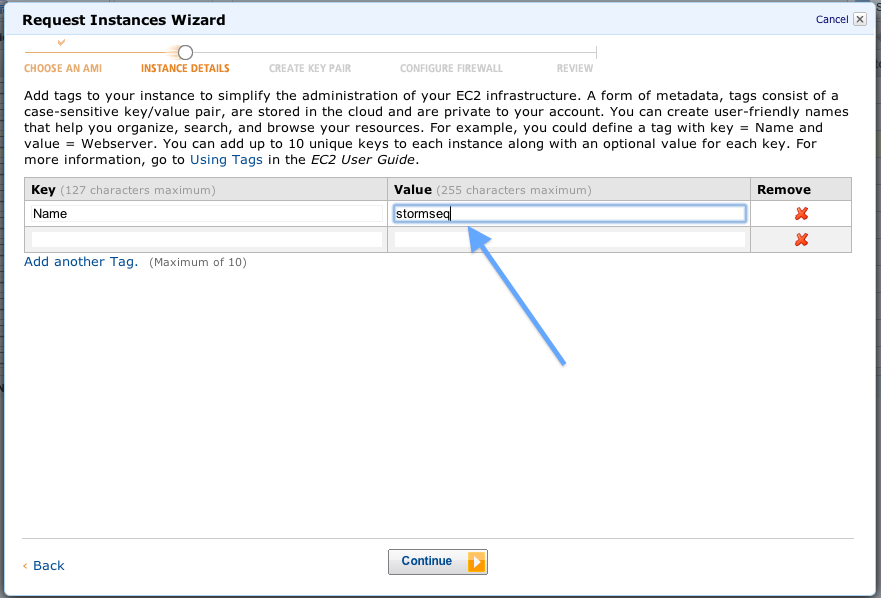
Create a key pair so that you can login to the system to upload your files. Name this file anything memorable, and remember where you saved it.
We will refer to this key the "Key Pair" file (not to be confused with the later "Private Key" and "Certificate" files)
If this is not your first time using STORMSeq, you can skip this step if you still have the key pair file saved on your computer.
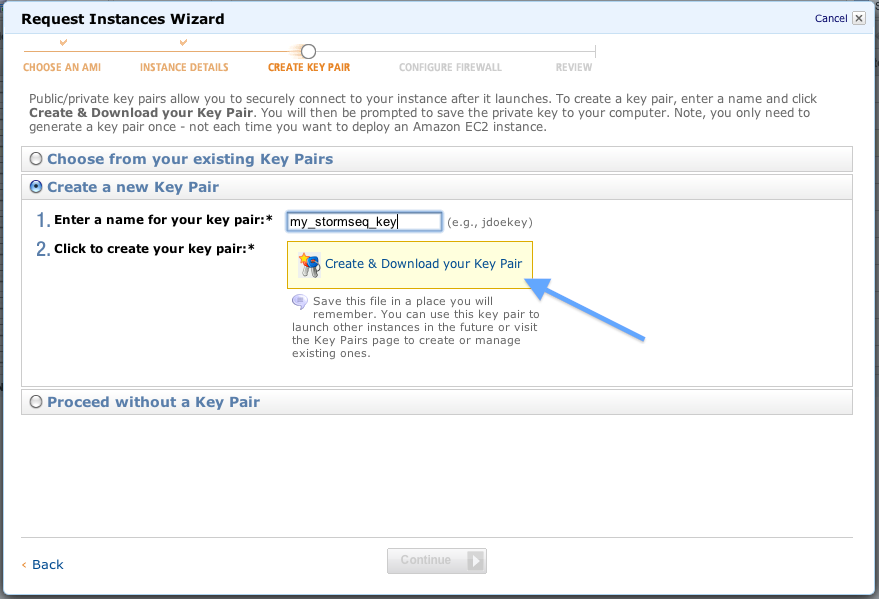
Create a new security group named "stormseq" as shown below. Verify that the SSH service is listed as shown.
(If it is not, create a new rule selecting SSH from the dropdown box and click "Apply rule")
If this is not your first time using STORMSeq, you can skip this step if the "stormseq" security group still exists.
Click Continue
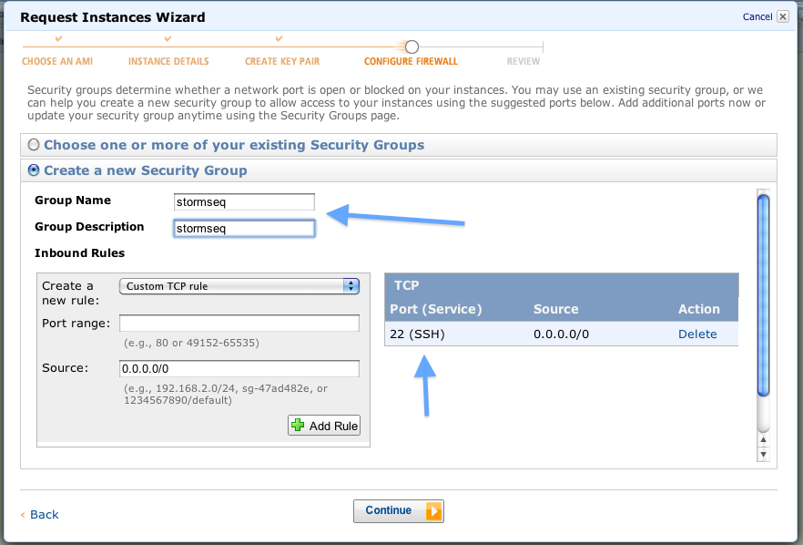
Your instance is ready! Click Launch.
3. Create a new volume where we will upload our data.
Back at the EC2 console, click Volumes in the left panel
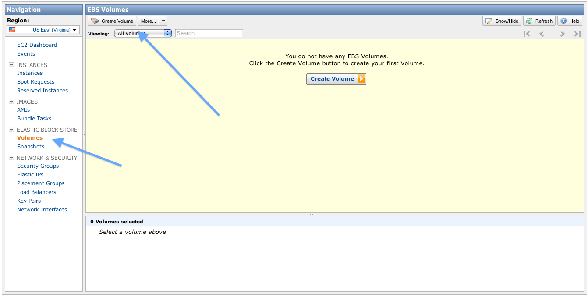
Create a volume of suitable size in the same availability zone (us-east-1b).
The size must be large enough for temporary files created by the software, so we recommend the following:
- If you are uploading raw FASTQ files, we recommend at least 10X the total upload size (if you upload 10 GB of *.fq, please select at least 100 GB)
- If you are uploading gzipped FASTQ files, we recommend at least 25X the total upload size (if you upload 2 GB of *.fq.gz, please select at least 50 GB)
Note: More can't hurt here, and Amazon storage is fairly cheap (at present, $0.10 per GB-month, pro-rated for less time).
Click "Yes, create"
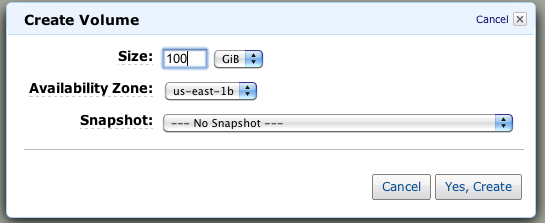
As with the instance, we are going to create a tag for our volume so that the software can find our data.
Click "Add/Edit Tags" as shown here
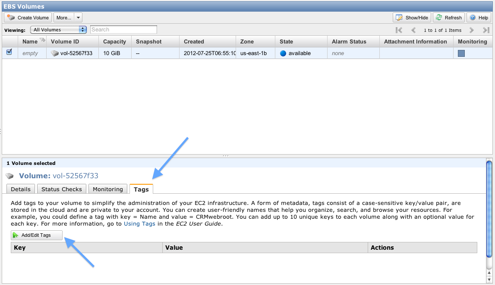
In the Value field (in the row whose Key is Name, as shown), enter "stormseq_data" and click "Save Tags"
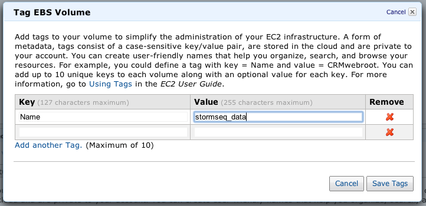
4. Upload security files to the newly created instance.
Now, we need to get our security credentials for the server to be able to start more servers and run our mapping jobs.
In the top right corner of the Amazon window, click your name and then Security Credentials
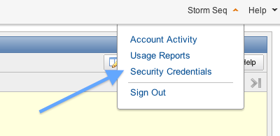
Scroll down and select "X.509 Certificates" and then "Create a new Certificate"
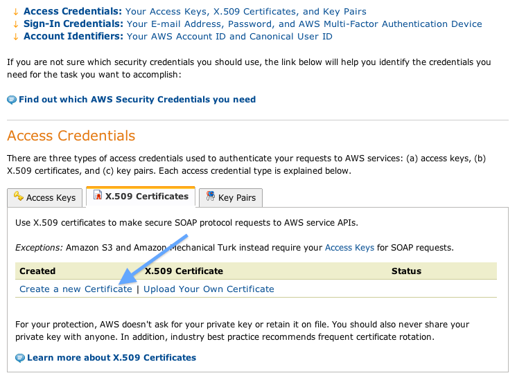
When they have been created, download both of these files ("Private Key" and "Certificate") and note where they are saved. Do not rename them.
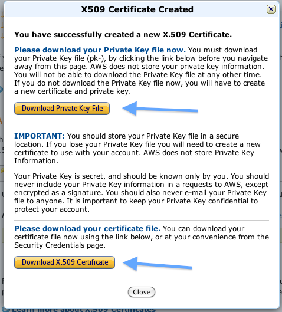
Close the window/tab to return to the EC2 console and click Instances.
By now, we should notice our server up and running! Click the instance itself and copy the address (ec2-XX-XX-XX-XX.compute-1.amazonaws.com).
Point your web browser to this address and you should see a landing page.
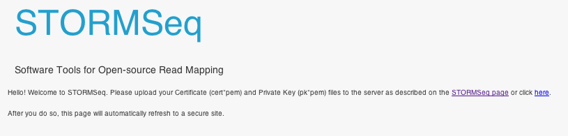
Upload the "Private Key" and "Certificate" files by clicking the link ("here") on the landing page, or using an SFTP client (username: root, no password).
Use the "Key Pair" file as the public key authentication. On Cyberduck, this means checking the box below and navigating to the "Key Pair" file from before.
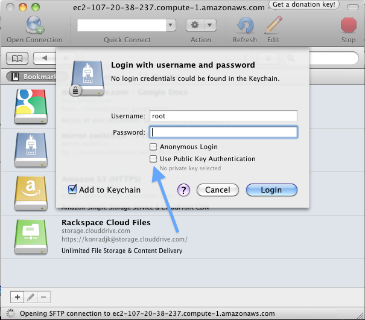
Drag and drop the "Private Key" (pk-*.pem) and "Certificate" (cert-*.pem) files onto the client to upload them.
5. Upload your reads!
We're almost there! Now in a little bit of server magic, after a few minutes, the landing page from before should automatically switch to the secure version of the site.
Your browser will likely throw a warning that the certificate cannot be trusted.
This is because the server signed it itself. It is safe to proceed.
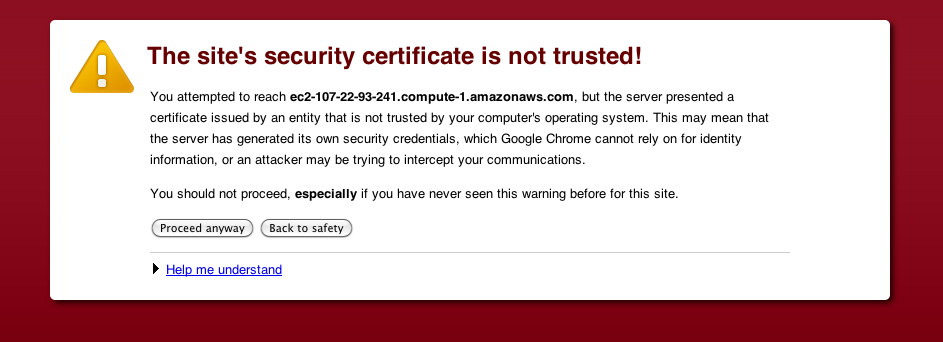
Once it does, we can upload our reads by clicking the link on the page (which will open a link to the same server to the /mnt/stormseq_data directory).
 Login using your public key ("Key Pair" file) as before, and drag and drop your reads to this directory. Reads can be *.fq, *.fastq, or *.fq.gz (gzipped).
This may take some time depending on how much data you have (may take overnight for high coverage genomes). Go grab a drink.
Login using your public key ("Key Pair" file) as before, and drag and drop your reads to this directory. Reads can be *.fq, *.fastq, or *.fq.gz (gzipped).
This may take some time depending on how much data you have (may take overnight for high coverage genomes). Go grab a drink.
6. Get final security credentials
While we're waiting, we can get the last of the security credentials needed. As before, click your name in the top right corner, and then Security Credentials
Click "Create Access Key" to generate a new access key id and secret key
Note: You can use the one that is already there, but for maximum security in this example, we will create a new one that you can delete it later.
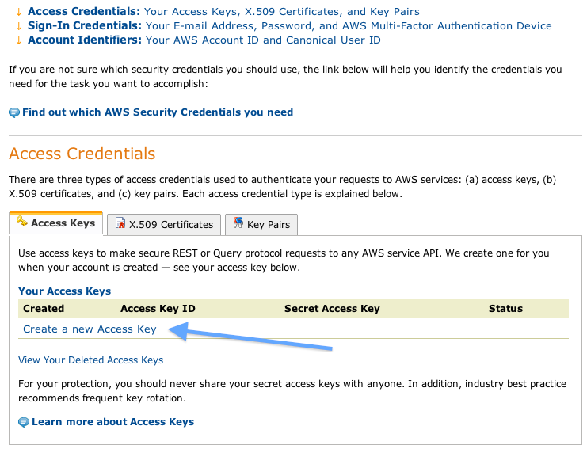
Copy your account number, as well as the "Access Key ID" and "Secret Access Key" (click "Show" to see this) into the relevant fields on the STORMSeq start page.
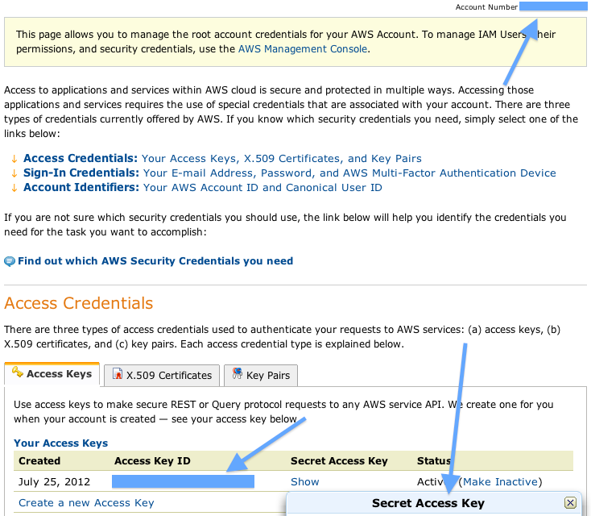
7. Create S3 bucket for our results
Finally, we'll create a S3 persistent storage bucket for our results (BAM and VCF files).
Back at the AWS Management Console, click the S3 link.
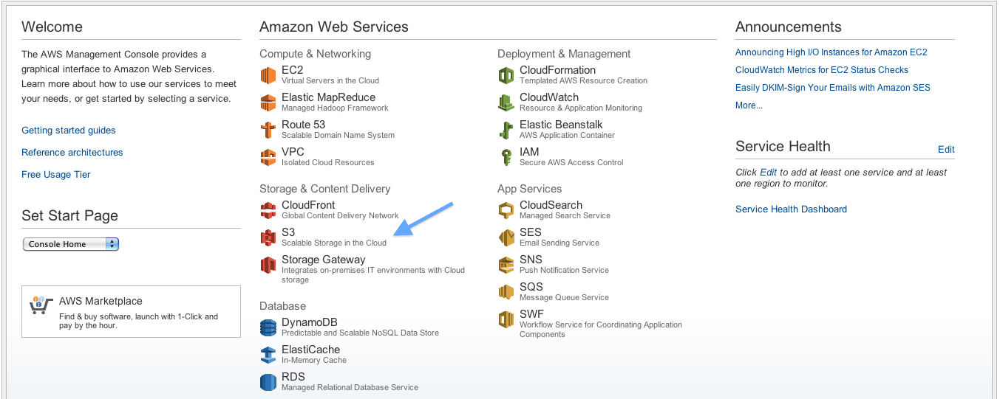
Click "Create Bucket" and name the bucket (it must not share a name with any other person's bucket, so you may need to get creative with naming).
Copy this name into the STORMSeq start page in the S3 Bucket field.
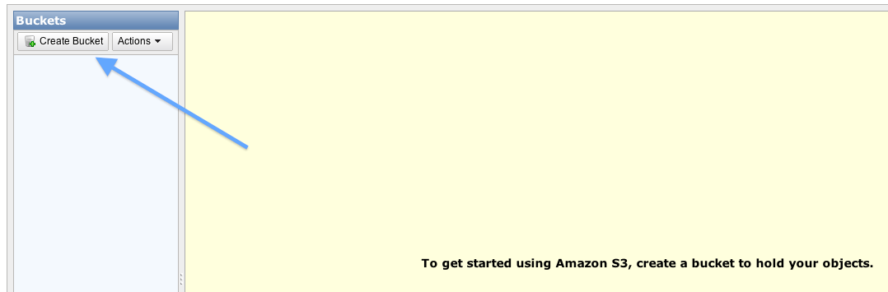
8. Set your parameters and begin processing!
Return to your STORMSeq start page (ec2-XX-XX-XX-XX.compute-1.amazonaws.com) and poke around!
In particular, note the Amazon EC2 Advanced Options link, where you can set the prices for bidding on compute time to save money
(more information can be found here).
Note that there are currently no failure modes. If your jobs are cancelled due to a low bid, they cannot be resumed, and will need to be set up from scratch).
Wait until your reads are finished uploading, then click "Verify Amazon Data and Files" for the software to verify your upload on the server.
This may take a few minutes depending on a number of factors, including the size of your upload.
When this completes, the "GO!" button will be active, which you can click to start the pipeline.
That's it! Your progress will be updated every few minutes and results will be available below.